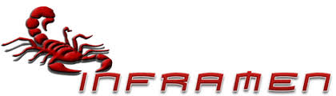

Ser líderes en innovación tecnológica educativa en El Salvador, desarrollando soluciones electrónicas accesibles, funcionales y sostenibles que impulsen el aprendizaje práctico, el emprendimiento juvenil y el desarrollo comunitario. Electrosorios aspira a ser un referente nacional en educación técnica, integrando tecnología con propósito y compromiso social.
Diseñar, fabricar y promover productos electrónicos que respondan a necesidades reales en el ámbito escolar, doméstico y emprendedor. A través del trabajo colaborativo, la investigación y la creatividad, buscamos fortalecer el conocimiento técnico de los estudiantes, fomentar el uso responsable de la tecnología y representar con excelencia al Instituto Nacional General Francisco Menéndez.